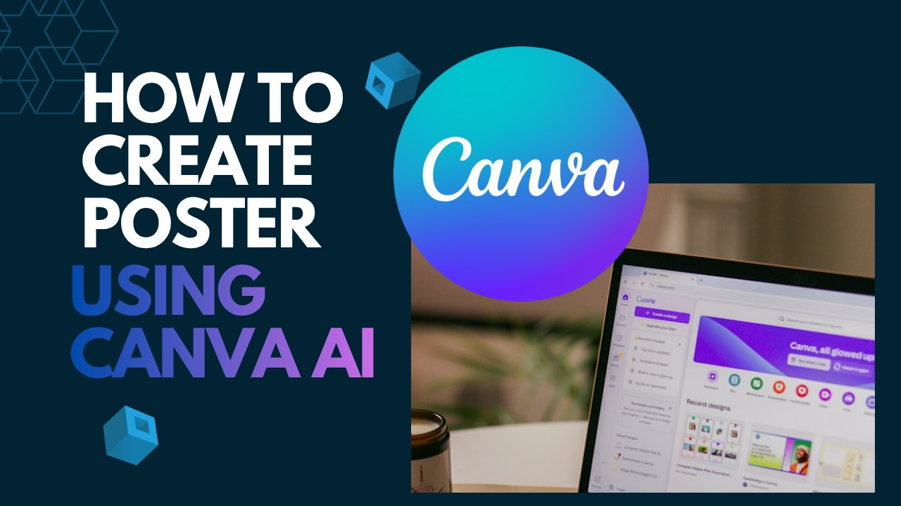

AI & Design
How to Create Social Media Posters Using Canva AI
Learn how to create professional social media posters with Canva AI using structured prompts, reference images and simple customization.
Read Blog